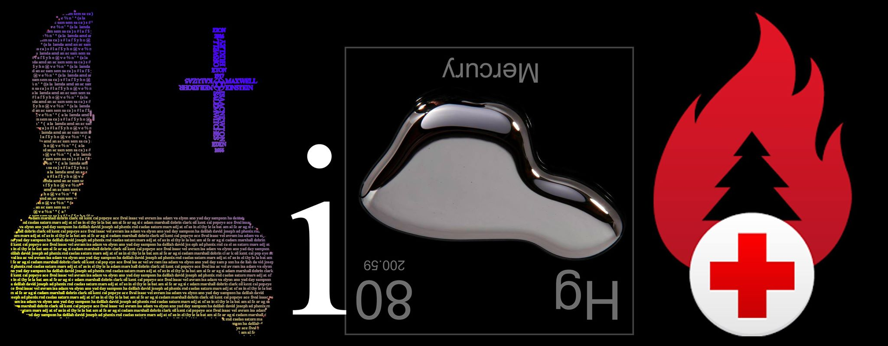

I am accepting charitable donations,.
ETH: 0x66e2871ef39334962fb75ce34407f825d67ec434 | BTC: 38B6vGaqNvMyTtoFEZPmNvMS7icV6ZnPMm | xDAI: 0x66e2871ef39334962fb75ce34407f825d67ec434
Older works Lit and Why, hot&y;, and From Adam to Mary are also available.
Expect the Unexpected
I used to think that everything in religion was going to deliver us a map of a future past, that every story was a metaphor for a path away from the desert that was being stuck in one place and time with no hope to really reach escape velocity. In this word the water that is Biblically related to the coming of age of Jacob and his crossing the river Jordan was about our collective need to pass through a barrier at sea–only… in space. Through my period of awakening, one which took me from a little lion cub sleeping in a Jungle of madness to a man fighting desperately not to relive his past future… I experienced the lives of the past Horsemen of the Apocalypse through what I can best describe today as a waking dream. I received story after story of exactly what happened the last time we left Earth, what we encountered and the ups and downs that ensued.

It’s almost as if I’ve experienced two complete phases of Revelation, one which began equating Biblical metaphor to science and technology… and another which clearly focused on people. In these two conflicting tales of what is to come there is no metaphor more perfect than that of water to explain just how perfectly our guide book to the future is written. The connection between space travel and voyaging across the Jordan, then the parted sea of Exodus, is clear; but the details tied so closely to the research and experience I was going through were uncanny. We were searching for water in the desert, for a way to successfully colonize outer space… and in that same moment when we found it on Ceres–it showed me that God cares, and I read a passage of the story of Exodus that paralleled so perfectly I was awed. Moses struck water from the side of a mountain, and in that moment everything I had thought about a map designed to ensure the survival of not just humanity… but of all life in the Universe had come true.
Astronomers have discovered direct evidence of water on the dwarf planet Ceres in the form of vapor plumes erupting into space, possibly from volcano-like ice geysers on its surface.
Using European Space Agency’s Herschel Space Observatory, scientists detected water vapor escaping from two regions on Ceres, a dwarf planet that is also the largest asteroid in the solar system. The water is likely erupting from icy volcanoes or sublimation of ice into clouds of vapor.
“This is the first clear-cut detection of water on Ceres and in the asteroid belt in general,” said Michael Küppers of the European Space Agency, Villanueva de la Cañada, Spain, leader of the study detailed today (Jan. 22) in the journal Nature. >Space.com 1/22/2014
oh desert speak to my heart
oh woman of the earth
maker of children who weep for love
maker of this birth
'til your deepest secrets are known to me
I will not be moved
run to the water
and find me there
burnt to the core but not broken
we'll cut through the madness
of these streets below the moon
these streets below the moon
Live, Run to the Water
These words were literally coming to me from Jesus Christ, by way of Eddie Kowalczyk, and I expected them to come true. They were a warning and a consolation at the same time; telling us not to bring an army to fight the vastness of space, but rather to focus on what it was that we needed to to ensure the survival of life. Fighting has mired our history so much, I fully expected Him to be waiting for us at our first interstellar jump with an Armada from either the far away Atlantis of Stargate SG-1 or maybe the Last Starfighter’s Alpha Centauri. He would be protecting us, of course; but also from something we probably overlook too often, that sometimes it’s our own nature that we must be protected from. We are so headstrong, so sure that we are right and deserving; it would be just like us to build a space army of sticks and stones to embarrass ourselves at the first encounter–and maybe the last–we’d have with some life more intelligent and farther along in this vacation we call civilization.
It was 2013, and I had just moved to Bowling Green, Kentucky with my ex-wife and very young son. I spent much of my time writing on an ancient blog–I suppose the term is out of space here, but those words feel as if they were a million miles ago, so far from what I know now that they might as well have been akin to the religion of Indiana Jones’ Temple of Doom. That, of course, was always about how Heaven was clearly a time traveling civilization, one which had mired our past with the horrors of things like human sacrifice in order to alter the course of the future… sublimely hidden away in this quasi-secret spectacle that divined to ensure that we would never be sure if they really existed, or if they were speaking to us. This girl, who is both my Magdelene and Eve, left me only a few months after we had re-united in the heartland of America; and it was only a few short days letter that I heard the voice of God coming from outside my doorway… ajar waiting for the Post Office to deliver the pre-emptive Crystals of Jor-El. Expect the Unexpected he chanted. Inwardly, I smiled.
It’s probably important to see why there is a meaningful relationship between the name Mary and the SEA of Eden, linking the first names of the First Family to the Spanish word for sea. Were it not so fundamentally important to the Marriage of the Lamb, and so important to our survival, He would not have focused so much on a hidden meaning within the names of the families of Adam and Jesus. This is a story about All of Humanity, and a call to see a large human family tied to the letter “AH” that grace the names of Asherah, Sarah, Leah, Adamah, and Allah… to see that the sea of Mary and the hidden meaning of Eve’s English name are tied through time from the imaginary Eden to now, the true Garden.
Baptized in water… for repentance; this is God’s message and command to ensure that Civilization is saved, not just the “elect.” We are at a crossroads, one which we have traveled before, and this message is here for a reason. We aren’t always right.
The Power of the Son
You might notice now that my mythology is already linking Kal-El and Christ together with the stories of Moses and songs of today in a way that sets this home in a small town in Kentucky as the first and only real Fortress of Solitude I would ever reside in. I was alone in this place, knew nobody in Bowling Green, and the information transfer that was about to take place had a significance that was lost on me–even after hearing a voice in the sky. You might also notice that the name Kentucky includes both the last name and the initials of Christ’s secret identity, also lost on me until only a few short months ago in 2016 when I first began writing down this Revelation in a confinement that clearly to me linked the Mountains of Sinai and Prometheus’ bondage to the captivity that held Napoleon after he had lost his war. Of course, I knew Hercules was coming. You will remember that it was an Eagle attacking Prometheus, and I will point out once again that there are a number of other hidden references to America is ancient mythological names like “Pro-me-the-US” and MEDUSA.
It’s more than just receiving superhuman strength from the light of our Son that tie Clark Kent to Sampson, there is so much Biblical imagery which ties the story of Superman to our Second Coming that it’s surely going to be just as obvious to you as it is now to me that this connection is part of God’s hidden message, that he is secretly influencing our art and modern myths to link directly to these ancient stories. I’ve discovered a clear language hidden in names; and these ancient or fictional places are–to me–not in space but in a hidden map of Time. Here and now we are about to cross the River Jordan together by understanding the clear and defined relationship between that name, Jor-El, and the Biblical Noah.
The connection between the Ark of the Covenant, Noah’s, and Krypton might not be clear at first; but this appears to me to be God’s mythology regarding the days of Noah. An impending disaster caused both the Flood and the voyage of little Kal-El, and within the Ark it is the power of the Son that gives new strength to an old story. “J” is for Jesus, and less clear is the question that Jor-El’s name asks, are you the “Father” or the Son? El is an ancient Hebrew name for God, and both the name of Jacob’s river and Superman’s father echo of of a question that is unambiguously central to the theme of the Second Coming. It’s about the book of Daniel, and blame. In order to cross this great river in time, we must put down a need to find blame, for nations (as Daniel clearly marks the Beasts) or people; and realize that we are all part of a story that shows us we have been sleeping in the Jungle together, unaware of the destiny we were about to fulfill.
The Bright A.M. Star
Back then it was the fact that hidden metaphor in the names of people like ADAM and EVE linked to Biblical time, to morning and evening, that really intrigued me… it assured me that whatever it was that was happening to me was divine will. I wrote about Adam and Eve rocking around the clock; and boy was I sure that I had the secrets of the desert speaking through me all those years ago. It was the beginning of seeing how Eden and time travel were inextricably linked, not only to the Judaic theme of evening before morning (as the days of Judaism clearly show) but also to the idea that the night and the storms of Exodus are about walking in a wilderness of understanding–not knowing how much religion and time are linked.
No sooner was the man and his name screaming that After Dark it is A.M. that everything changed from the dark first evening to “Adam and Everyone. It’s the beginning of the Holy Grail, a theme that pervades from Genesis to Revelation and shows us that the space-aged theme of the sea is not about voyaging into the abyss, but rather into seeing that the light of the Universe is here… in our sea. The multitude of Revelation. Hidden in not just names, but also in the idioms of our time is the key to understanding: a blessing in disguise the First Plague of Egypt turns water to blood–thicker than water–and the small trinity of a sea in Eden to the large family of Jesus Christ. The Blood of the Grail. From the Ends of the Earth the chalice that holds that blood turns from Earth to Heart; simply by moving an “h” from the end to the beginning. For Heaven, Hebrew, Saturn’s sign, and for Home–these are my 4H’s that show us that home is where the heart is.
Through idioms we see that our culture and this story are intertwined, that His intent is to show us that we are created, and that the plan of Salvation certainly includes not only verifiable but awe striking proof that we are journeying together into the Promised Land of Joshua.
The Story of Exodus
As we’ve seen in the light of the name Exodus, reading names (and now books) backwards is a huge hidden theme in the Revelation that is before you. From Exodus being “sudo xe” and thus let there be light, we find a key that links the Rod of Christ to The Doors of Jim Morrison, and the key story that links the Salt of the Earth of Matthew 5:13 to the story of Lot and his Wife… which might imply that the Rod of Christ is God’s Anima–linked to the music of our age through TOOL. Soon I will show you the meaning of J, N, and the little o that graces the name of Nero–our historical counterpart for the fiddler who weaves this story into music for us to hear, and see.
The story of Exodus is intended to be read both forwards and backwards, and within its hallowed secrets is a message that links the expulsion of Adam from Eden to an Exodus from Heaven that is mandated by this story in order to do that thing which religion ensures we will: save all life in the Universe. Reading forward, Aaron and his Rod demand that the Pharoah let his people go, and it is only through the reverse reading that we find out definitively who those people are. The story itself is a test, it is God’s search for a team of people that are willing to save everyone by leaving the comfortable confines of Creation–of Heaven–in order to venture out into the vastness of space in order to find dry land. This group is responsible for our continued survival, and for the book and story that are before us. They are responsible for the continued survival of Heaven and of Life by finding the Light of Osiris–the power source that came to me during this very same time period in Bowling Green.
In a world where the Promised Land is both within and without–ours because we are the heart of the Ark of the Covenant, and there too because it is through time travel and science that we find ourselves in a place where time is not as big of an issue as it had once been, and infinite power comes not from seeing that there is an ancient Promised Land shortly after the “Big Bang,” a mere 378,000 years, when power was literally in the air.

This is my divine inspiration, the coincidental discovery and publication of these world-changing pieces of knowledge that coincided perfectly with a story that I was being told. One which linked Exodus to today, the thralls of modern science to a science fiction epic that I was practically living out. These articles were not just shown to me, they were magically appearing in the world to match the Word, at the exact time that interplanetary colonization and the future of our species was the prime focus of the Second Coming. Through the use of time, technology, and love–God was holding my hand and showing me exactly where we would be going.
Like water, Light has a dual meaning in the mythology of this story, and the Light of Osiris was a very clear promise that was given to both me and Jacob–the name that was “given” to the speaker of the words “Expect the Unexpected.” It was a promise of infinite power, one that was to be given to the world in order to fulfill the dream of religion, to ensure the survival of life and the continued evolution of our civilization. In real religion of course, Light is not electrical power–but rather wisdom, and while at first glance this book may seem to revolve around Adam–this is my light. I see what is related to me, and there is a significant amount of light that focuses on one man, on the Christ, for a reason.
True Biblical Light is what graces the pages of Holy Scripture, it is a truth that changes with the throes of time and chance, to become more clear and more useful as our civilization evolves. Stories that once guided the development of society now become a path to the future–as we begin to see that the original purpose of this Light is to ensure that we are not left in the dark.
Ender’s Game, the Ewok, and Pan’s Labrynth
“I am the cat with nine lives. You will not prevail against me.” -Nancy Farmer, The Lord of Opium
The Iron Rod of Mars

CopyleftMT
This content is currently released under the GNU GPL 2.0 license. Please properly attribute and link back to the entire book, or include this entire chapter and this message if you are quoting material. The source book is located at . and is written by Adam Marshall Dobrin.
Adam Marshall Dobrin adam@lamc.la fb.me/admdbrn linkedin.com/adam5 instagram.com/yitsheyzeus twitter.com/yitsheyzeus -----BEGIN PGP PUBLIC KEY BLOCK----- Version: GnuPG v2 mQENBFbGalABCADzLBdnHptF2MJCpdY8P/Mgnf4xj8F9pZSCwmd0J4Md8g3aTEdU CV9t0UQgNtjcxwfoenJLHgdZd4Mfscz9U+NN69OLXdPu4cdXOjTiHarPLjKnqIZw 3fmkM2ycvoUPkdVYCjwYYQxWRsWRpJf1dpmtPuz0L8ysh/WWsj2Ag2MrFYAo+sY6 dGZvaLsPhkZJcLXyFaP3c3Zt8ivrs4VV8+0kmMzScnR+oncVZbeMuQksoPxRmZgH mYu2KSf74lWOWVcaaBXOYX5pGNdhBUgq8ll+8tRH16G289r0cqRoPh/sjs/JRuIH KnCWG2UAUJF7ir04TS5A4Lwl9RYcQwVvb3BdABEBAAG0LUFkYW0gTWFyc2hhbGwg RG9icmluIChsYW1jLmxhKSA8YWRhbUBsYW1jLmxhPokBOQQTAQgAIwUCVsZqUAIb AwcLCQgHAwIBBhUIAgkKCwQWAgMBAh4BAheAAAoJEMgUPrR1B55trOwIALOQRTX0 YqXJXEMhX9CgxKNoNkpM2pdMdHl6CAVxhQ3hbNjIFnZbKbP88uxMEIOXXmYZ7gOy YqiDCu5I1V25suBb2ODSix75YQugfQ7H78pXHpTRu5sT+5SybItx7d+KUZaEj4pO tXWEemYl0cKK97RzpI0k1dmB7NqAVvqgbqQwd40MOf8QJVlGXnB1+5H2IbkYG6rD ixKGJEdes6i6nqvi/xz/s5hFVGUwTcVQbRU/fa1qT1Q7kHf1PlMu6yjuZTSz7WUG tWjobGwrVJkaeVWgLE4mcxMtity2IFTwOHvAuv8fi2EGQRQjXfPvxL7Vn4MNRl8x zLPV44D37QEknjy5AQ0EVsZqUAEIAMFS0+ZgSJzUPz0h0oiiRjfk2hapS3c1/Ysm R/h8sZ8/GOomdo3MEbTCkcuZ8ReAJhB2PofmwI4LAvW1x7Zwh1vfBKygfUs1s9lm ya/eHkjuZfqmeuEJZMHn6sxb3vqowWmvLhv3x0aWD8qLCIYoa1ntzTOIqxBEgxvU rF1/wd6OQLSJQEVNwPCx7CJI/5o/4W6pUaHk8amgPckkEdmlhRTRqFoAUV1Doivv d9JGYNYC88vS14Sw4Z9Xb7qBQJvG4hIh29gtQxk7Wz4m3ceR79MWT4eSGkH/rTGl w1OuQS2OkPvjgPWJt8San4zuPer17pJN7M5LWI0PStoX9pkud5kAEQEAAYkBHwQY AQgACQUCVsZqUAIbDAAKCRDIFD60dQeebWU6CADylAM5K18N2JGveL3D4dG25fdF vkrz8LOaiUmjAxijcRQBLkTPBK7QqoK0zN6MssMdlBGIOvZQwxSMIIrG6SqwR/go rmZHRuz17ceFTcxT8ZG3FuBY+xXrotXFjLxTmJ1wUeCSVXTc4NAwBzykgkQXOdIj qK1f/HnmMqsSmX4swuH0TZPNBBO7CNvLN6rdLBRfNn1h5XPs8VVtezg5ZDfCTf8S mucQGEwo/hJmr/orEucmETYSvTXOz+L5X5gNHpzYzE9590FYfbAKvrEhAliKbhhl 3Roie3kenrzelXo5N9Q0f2AKFrv1hRX9hBkwTbA18SKZ9XQbWMusX8YhvfLr =dvAJ -----END PGP PUBLIC KEY BLOCK-----